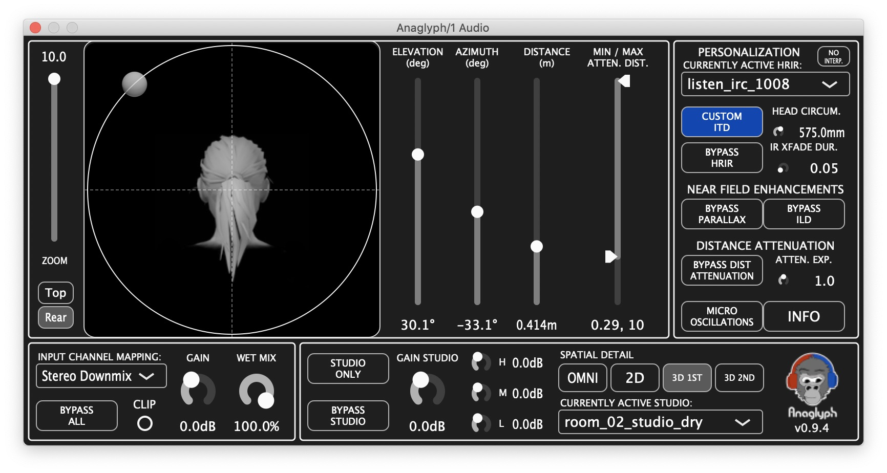

High-definition binaural spatialization engine
Integrating the results of over a decade of spatial hearing research
Anaglyph is part of an ongoing research effort into the perceptual and technical capabilities of binaural rendering. This audio plugin was designed both to support ongoing research efforts as well as to make accessible the fruits of this research to audio engineers working in DAW environments. Amongst its features, Anaglyph includes a personalizable morphological ITD model, near-field ILD corrections and HRTF parallax selection, a localisation enhancer, an externalisation booster, and multiple HRTF support via the SOFA file format.
Download files and follow instructions according to your architecture:
Subscribe to the mailing list for updates on future releases (newsletter archives). Previous releases and release notes can be found here.
Customization of binaural rendering parameters for a given listener. Select an HRTF profile that best suits your morphology to improve overall localization. Adjust the rendering based on your head diameter to improve lateral localization.
Rendering enhancements that improve the sensation of distance for nearby source positions. Parallax correction selects HRIR positions based on the actual direction of arrival of the sound object as “seen” by each ear, rather than using a head-centered coordinate system. ILD correction modifies the left and right ear levels, as a function of frequency, to account for the head shadowing effect of nearby sound objects. The ILD correction is predominantly applied to the contralateral (opposite side) ear, in an effort to maintain sound level at the ipsilateral (nearby) ear.
When rendering sounds over headphones, a common artifact is that sounds seem to be very near, or even inside, the listeners head. This does not typically occur when listening over monitor speakers in a studio. This module adds the subtle acoustic cues of a reproduction system in an acoustically controlled studio, providing improved externalization. This is not to be confused with a reverberation plug-in. Gain, EQ, and spatial resolution (Ambisonic order) can be adjusted to optimize the externalization.
In the case of non-tracked binaural rendering, static source positions are sometimes difficult to localize correctly, with front/back confusions often occurring for sources in certain regions. To reduce such confusions, and to help stabilize the perceived position of the sound object, the actual rendered position is varied slightly, providing “added redundancy” of localization cues to the brain, aiming at reducing localization confusion.
Cite:
D. Poirier-Quinot and B. F.G. Katz, “The Anaglyph binaural audio engine,” Proc. Audio Eng. Soc., pp. 9591:1–8, May 2018. ref: 10.1121/1.4996457.
License: The Anaglyph binaural audio engine is released under the CC BY 4.0 license.
Credits:
Anaglyph was developed in the context of numerous academic research projects with the CNRS (previously under the name LSE) and Sorbonne University, with participation by the Dyson School of Engineering, Imperial College London within the remit of the 3D Tune-In project.
The Anaglyph project is supervised by Brian F.G. Katz.